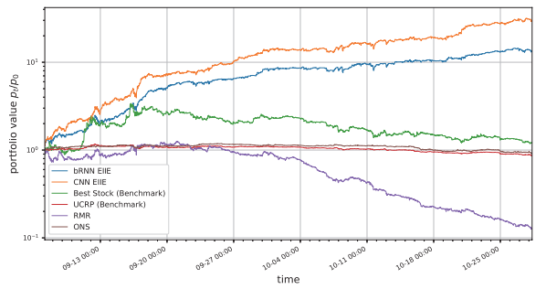

Deep Learning
This page shows applications of convolutional and recurring neural networks in conjunction with computer vision and API interfacing.
The Problem:
This task was a simple prototype that was developed into a fully functioning model by my peers. I was asked to write a skeleton code that could easily be upgraded into a complete software package.
The program should recognise hand signals from the user and then complete pre-determined functions based on these. For example, drawing a circle with your finger could open a web browser.
The Solution:
First, I decided to simplify the problem. Instead of recognising what the user draws with their index finger, my program follows blue coloured objects -- I conveniently had a blue handle lying around. On top of that, the only symbols I would train the machine learning algorithm on would be 0 and 1. Drawing 0 with my blue pen or blue pointer should cause the program to open a web browser. 1 would be a control variable.
I decided to use a convolutional neural network to classify the hand signs because these would easily generalise to classifying multiple symbols. CNNs are very powerful for image recognition tasks.
To begin with, I wrote the CNN in keras. The code trains and tests the model. I adopted a very typical network architecture. It then stores the model in an HDF5 file so that it may be loaded by other programs. If the displayed success rate of the model is not sufficient, the user can retrain the model. Retraining may possibly be beneficial since the algorithm is only trained for one epoch to spare time.
import keras, numpy as np from keras.datasets import mnist from keras.models import Sequential from keras.layers import Dense, Dropout, Flatten from keras.layers import Conv2D, MaxPooling2D from keras import backend as K batch_size = 128 num_classes = 2 epochs = 1 img_rows, img_cols = 28, 28 (x_train, y_train), (x_test, y_test) = mnist.load_data() x_train = x_train[ np.isin(y_train, [0,1]) ] y_train = y_train[ np.isin(y_train, [0,1]) ] x_test = x_test[ np.isin(y_test, [0,1]) ] y_test = y_test[ np.isin(y_test, [0,1]) ] if K.image_data_format() == 'channels_first': x_train = x_train.reshape(x_train.shape[0], 1, img_rows, img_cols) x_test = x_test.reshape(x_test.shape[0], 1, img_rows, img_cols) input_shape = (1, img_rows, img_cols) else: x_train = x_train.reshape(x_train.shape[0], img_rows, img_cols, 1) x_test = x_test.reshape(x_test.shape[0], img_rows, img_cols, 1) input_shape = (img_rows, img_cols, 1) x_train = x_train.astype('float32') x_test = x_test.astype('float32') x_train /= 255 x_test /= 255 print('x_train shape:', x_train.shape) print(x_train.shape[0], 'train samples') print(x_test.shape[0], 'test samples') y_train = keras.utils.to_categorical(y_train, num_classes) y_test = keras.utils.to_categorical(y_test, num_classes) model = Sequential() model.add(Conv2D(32, kernel_size=(3, 3), activation='relu', input_shape=input_shape)) model.add(Conv2D(64, kernel_size=(3, 3), activation='relu')) model.add(MaxPooling2D(pool_size=(2, 2))) model.add(Dropout(0.25)) model.add(Flatten()) model.add(Dense(128, activation='relu')) model.add(Dropout(0.5)) model.add(Dense(num_classes, activation='softmax')) model.compile(loss=keras.losses.categorical_crossentropy, optimizer=keras.optimizers.Adadelta(), metrics=['accuracy']) model.fit(x_train, y_train, batch_size=batch_size, epochs=epochs, verbose=1, validation_data=(x_test, y_test)) score = model.evaluate(x_test, y_test, verbose=0) print('Test loss:', score[0]) print('Test accuracy:', score[1]) model.save('model_file.h5')
The above code needs to be run before the following code can be made to work:
import numpy as np, cv2, argparse from collections import deque from keras.models import load_model from keras.preprocessing import image import webbrowser ap = argparse.ArgumentParser() ap.add_argument("-b", "--buffer", type=int, default=64) args = vars(ap.parse_args()) pts = deque(maxlen=args["buffer"]) count = 0 lower = (97, 100, 117) upper = (117, 255, 255) color = (255, 0, 0) camera = cv2.VideoCapture(0) model = load_model('model_file.h5') def predictSymbol(): link = 'C:/Users/user/Downloads/output_image.png' img = image.load_img(path=link, grayscale=True, target_size=(28,28,1)) img = image.img_to_array(img) img = img.reshape((28,28)) img = model.predict(img.reshape(1,28,28,1))[0] return np.nonzero(img == max(img))[0][0] while True: grabbed, frame = camera.read() blurred = cv2.GaussianBlur(frame, (11, 11), 0) hsv = cv2.cvtColor(blurred, cv2.COLOR_BGR2HSV) kernel = np.ones((9,9),np.uint8) mask = cv2.inRange(hsv, lower, upper) mask = cv2.morphologyEx(mask, cv2.MORPH_OPEN, kernel) mask = cv2.morphologyEx(mask, cv2.MORPH_CLOSE, kernel) cnts = cv2.findContours(mask.copy(), cv2.RETR_EXTERNAL, cv2.CHAIN_APPROX_SIMPLE)[-2] center = None if len(cnts) > 0: c = max(cnts, key=cv2.contourArea) (x, y), radius = cv2.minEnclosingCircle(c) M = cv2.moments(c) center = (int(M["m10"] / M["m00"]), int(M["m01"] / M["m00"])) if radius > 0.5: cv2.circle(frame, (int(x), int(y)), int(radius), color, 2) pts.appendleft(center) img = np.zeros((512,512,3), np.uint8) for i in range(1, len(pts)): if pts[i - 1] is None or pts[i] is None: continue thickness = int(np.sqrt(args["buffer"] / float(i + 1)) * 2.5) cv2.line(frame, pts[i - 1], pts[i], (255, 255, 255), thickness) cv2.line(img, pts[i - 1], pts[i], (255, 255, 255), thickness) if sum([i != None for i in list(pts)]): cv2.imwrite('C:/Users/user/Downloads/output_image.png',img) cv2.imshow('C:/Users/user/Downloads/output_image.png',img) if predictSymbol() == 0: count += 1 if count > 100: webbrowser.open('http://google.com') break cv2.imshow("Frame", frame) if cv2.waitKey(1) == ord("x"): break camera.release() cv2.destroyAllWindows()
Upon running, the above program prompts the user's webcam to record and tracks any objects with the appropriate colour and size. It will then open a web browser if a circle is drawn. There are many technicalities in the code which were cleaned out in later versions but a demo can be seen in this video:
The program works as expected. The only neccessary modification is to train it on a different set of symbols and to figure out a more ergonomic way of tracking the hand. One possible solution is a thumb tip.
Note that the final application would not be showing a video of the webcam. The idea is that the program runs in the background.
This project is currently in progress. My task is to implement reinforcement learning techniques over a continuous state space as explored in this research paper.
The idea is to determine a policy that converges to the best stock investment strategy by constructing an agent that acts in a stock trading environment.
The figure shows the first back test conducted by the research paper. Open source projects that have attempted to reconstruct the results (link) have failed to reproduce these results. My goal is to match the results and to provide an open source API to provide investment instructions.
Last updated: 17/10/2018